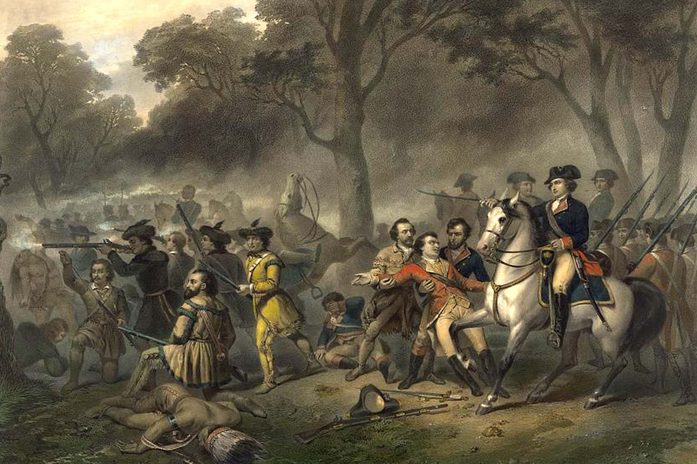

George Washington began his military career when he joined the Virginia militia at the rank of major at age twenty in 1752. Washington achieved his rank through various social connections and would serve within the militia for around six years during which he would gain key experience fighting in the French and Indian war. During the war Washington would gain a reputation of bravery when he organized a retreat out of an ambush after his expedition's leader, General Edward Braddock, was fatally wounded. After Braddock's failed expedition, the Virginia Regiment was created to help protect the state and Washington would later be promoted to the rank of colonel in the regiment at the age of twenty-three. Washington spent the next three years defending Virginia where he would partake in multiple battles and continue to grow his reputation and gain military experience.
In 1758, Washington resigned his commission and returned to civilian life. Even though he may have left the military, he remained a figure within Virginia government and politics by running for and gaining a seat in Virginia's House of Burgesses. Many years later in 1774, Washington was sent to the First Continental Congress as a delegate. After the fighting at Lexington and Concord in 1775, and the Second Continental Congress, independence was declared from the British Empire and Washington restarted his military career as commander-in-chief of the Continental Army.
